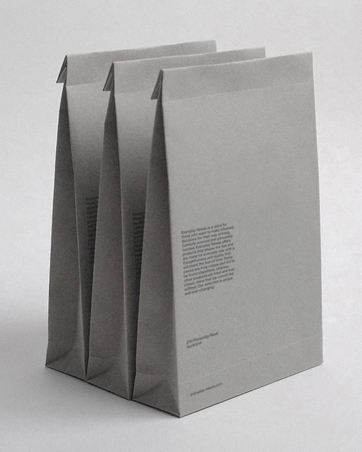
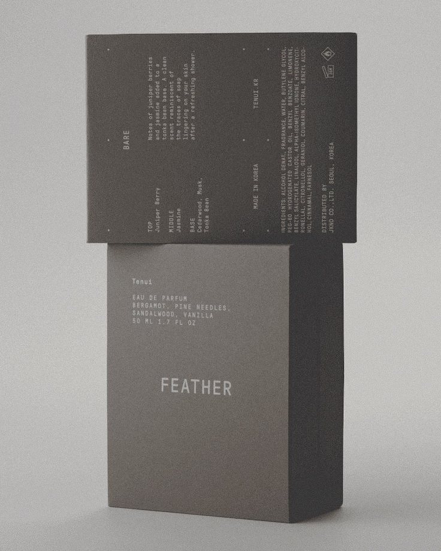

"Everyday" - Serie de Empaques Sostenibles
Estudio de Diseño Sustentable
Colección de bolsas minimalistas que redefinen el packaging cotidiano. El diseño presenta una serie de bolsas en papel con un acabado monocromático y texto sutil, enfatizando la importancia del diseño consciente en objetos diarios. La disposición geométrica y la textura del material crean una declaración visual sobre la simplicidad y la sostenibilidad.
Diciembre 21-enero 5

"Cristal y Textura" - Diseño de Andrea Frost
Diseñadora de vidrio y materiales
Colección de piezas de cristal soplado con bases texturizadas que exploran la fusión entre transparencia y rugosidad. Cada pieza combina la pureza del vidrio transparente con una base orgánica de acabado mate.
Septiembre 20-30

"Módulo" - Sistema de Mobiliario por Marco Vega
Diseñador industrial y arquitecto
Mesa auxiliar modular en acero y vidrio que combina simplicidad estructural con versatilidad funcional. Diseñada con niveles para almacenamiento de libros y objetos, con un acabado industrial minimalista.
Octubre 3-15

"Unplain" - Diseño de Productos Esenciales
Studio de diseño minimalista
Línea de productos de cuidado personal que celebra la simplicidad. Envases traslúcidos con etiquetas minimalistas que reflejan la pureza de su contenido, combinando funcionalidad con estética reduccionista.
Octubre 18-30

"Ángulos" - Mobiliario Arquitectónico
Studio de Diseño Geométrico
Silla conceptual que explora la geometría pura y el minimalismo estructural. Diseñada en hormigón blanco, la pieza dialoga con su entorno modular, creando una experiencia visual y funcional única.
Noviembre 5-17

"Feather" - Diseño Minimalista de Fragancias
Studio de Diseño de Packaging
Packaging para fragancia que explora la elegancia a través de la simplicidad. El diseño presenta una caja en tonos grises neutros con tipografía minimalista, destacando los componentes esenciales: bergamota, agujas de pino, sándalo y vainilla. La estética reduccionista del empaque refleja la pureza y sofisticación del perfume de 50ml.
Diciembre 7-20

"Contenedor" - Serie Transparencias
Estudio de Diseño en Vidrio
Recipientes de vidrio que juegan con la luz y el color. Cada pieza explora la interacción entre forma, transparencia y contenido, creando composiciones visuales que transforman lo cotidiano en arte funcional.
Noviembre 22-diciembre 5
Nuestra sección de Productos está dedicada a mostrar lo mejor del diseño contemporáneo, con énfasis en objetos que fusionan la estética minimalista con la funcionalidad innovadora. La galería presenta desde mobiliario arquitectónico y piezas de cristal artesanal hasta sistemas de packaging sostenible, destacando el trabajo de diseñadores que buscan redefinir nuestra relación con los objetos cotidianos.
El espacio celebra el diseño que prioriza la pureza formal y la honestidad material. Exhibimos piezas que demuestran cómo la simplicidad puede potenciar tanto la función como la estética, desde mobiliario modular hasta objetos decorativos que transforman los espacios cotidianos. Cada producto seleccionado representa una exploración cuidadosa de materiales, formas y texturas.
Como plataforma curatorial, buscamos productos que trasciendan las tendencias pasajeras para convertirse en piezas atemporales. Privilegiamos el trabajo de diseñadores y estudios que aportan nuevas perspectivas al diseño de productos, ya sea a través de innovaciones en materiales sostenibles, técnicas de producción responsable o aproximaciones conceptuales al diseño de objetos.